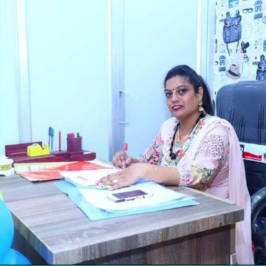
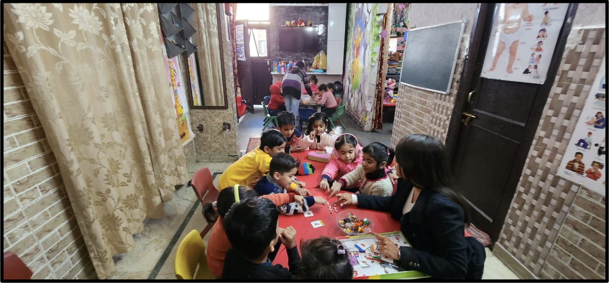
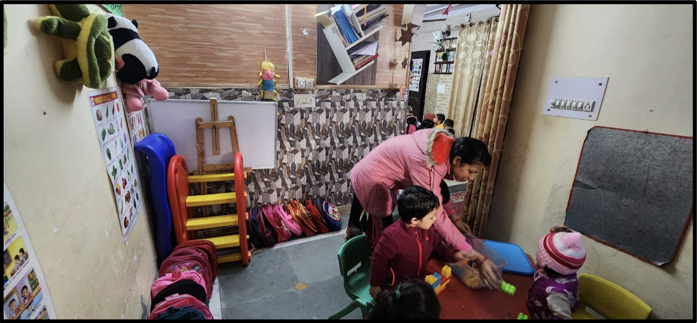
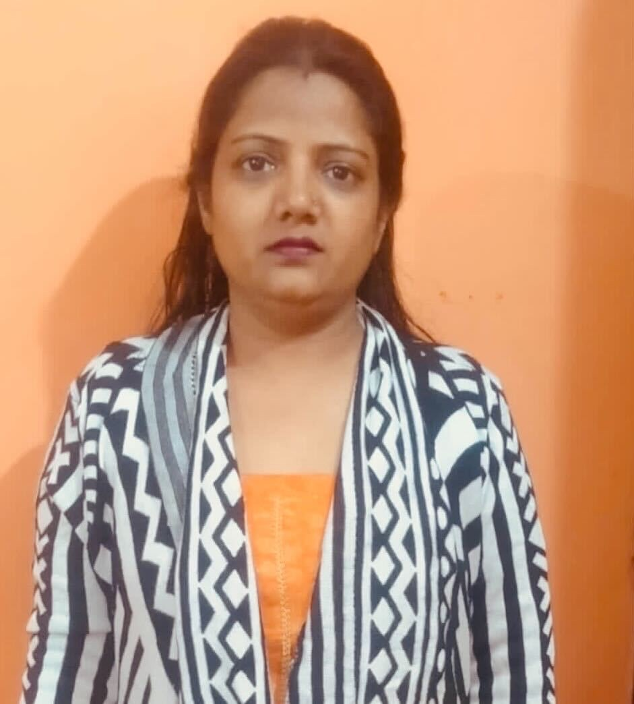

What’s common amongst IIM’s, IIT’s, Kendriya Vidyalayas, DPSs of the world? Apart from being successful educational institutions; these are unique institutions that have created more of them and, therefore, allowed thousands of students across our country to benefit from its quality educational offerings. These quality institutions not only offer children (and their families) hope but also an opportunity for a better life.
Due to the competitiveness though, children from higher income groups, bigger cities and towns have an upper edge owing to better access to early schooling/education, better coaching facilities and guidance in life. A vast majority of India living in urban slums, tier 2-3-4 towns and villages gets left behind. The real question, then, is this: How do we help children/families leapfrog to a quality educational system that works for them?
We believe community-based learning centers, enabled by the latest, cutting-edge technology and an adult who cares, can improve access to quality education for children in India.
Meraki, in partnership with Malpani Ventures, calls these community-based learning centers - PODs. These PODs have three main characteristics:
An Entrepreneur who cares
Entrepreneurs who care are a different breed. They care not just for the financial return on their investment of time and money but also on the impact they’re having on society. At PODs, we invest in such entrepreneurs who are committed to not just making things better for themselves but also for the community that they inhabit. Interested in meeting some of them? Come along and:
Meet Ritu
Nestled in the Gulab Bagh locality of Nawada, a residential area with a slew of grocery stores, repair shops etc, lies the Little Droplets center run by Ritu. Owing to her passion for teaching and learning, she runs the center currently from the confines of her home; something she wants to change soon.
Her Center
 Ritu’s story is a story of ‘a quintessential fighter’ who lost her 2-storeyed preschool, her husband during covid yet never gave up. Her passion for teaching and learning was such that even after such back-breaking tragedies she didn’t stop. Egged on by the support from her elder daughter, these adversities gave her more motivation and courage to restart and build everything from scratch.
Her Aspirations
Much like the fighter Ritu is, her goals for the next 5 months are ambitious too. Supported by Meraki and Malpani Ventures, Ritu aims to increase her revenue by 1.4x, child enrolment to her center by 2.3x and time spent on technology enabled learning by 2.6x.
Revenue
₹50,000 (Feb '23) vs. ₹70,000 (Jul '23)
Children Enrolled
35 (Feb '23) vs. 80 (Jul '23)
Learning via Tech
3hrs/day (Feb '23) vs. 8hrs/day (Jul '23)
Meet Kavita
Hailing from a village near Yamunanagar, Kavita was one of the first girls in her village to go to a university. She shifted to Delhi after marriage and made the narrow lanes of Mohan Garden, West Delhi her new home. After a few teaching stints, she realized her true calling was to ‘teach on her own terms’ rather than to continue teaching in schools that prioritize the business of education over education. With a promise to make quality education affordable, she bootstrapped to set up her own school in 2016.
Her Center

Although the six year stint of running her school came to an end in 2022, she didn’t give up on her dream of providing quality education to children in her community. After a period of hardships, owing to her determination and passion for education, she took small steps to set up her own tuition center from the first floor of her own house. In her second avatar as an edu-preneur, she believes she’s wiser and more determined as ever. And guess what? We and her community of parents and children are all for it!
Her Aspirations
Much like the fighter Kavita is, her goals for the next 5 months are ambitious too. Supported by Meraki and Malpani Ventures, Ritu aims to increase her revenue by 3x, child enrolment to her center by 2x and time spent on technology enabled learning by 5.33x.
Revenue
₹10,000 (Feb '23) vs. ₹30,000 (Jul '23)
Children Enrolled
28 (Feb '23) vs. 55 (Jul '23)
Learning via Tech
1.5hrs/day (Feb '23) vs. 8hrs/day (Jul '23)
Cutting Edge Tech

Tech that is built with a vision of providing 'a powerful computer for every child'. It turns any TV or monitor into a powerful computer. We’re proud that you get to:
We Build In Open
At Meraki, we’re committed to sharing our learnings from POD based micro-experiments with our community. We’d like nothing more than stakeholders from our community (or outside) to build on these learnings and improve the quality of education accessible to children in their communities (or worldwide!). Better, we hope that more attempts are made to build technology enabled, financially sustainable enterprises especially in the context of low-income communities. Therefore, we’d like you to:
Recruitment and Selection
A. Identifying Entrepreneurs in low-income/rural communities
At the start of the program, the team aimed to identify high-potential women from low-income communities to set up their own learning centers. We’ve learnt that, for educational interventions, the starting point of such an endeavor is to:
- map stakeholders, such as tuition teachers, pre-school workers within communities
- leverage local NGOs and/or from local Job Melas
- Identify candidates through local Asha/Anganwadi worker
- identify candidates through local B Ed colleges
From experiments of past and present, candidates identified with maximum success rate (from identification to entrepreneurs) generally came from:
- High potential candidates identified from partner NGOs
- Community Mapping activities specifically of tuition/school/preschool owners
- Candidates sourced through Asha/Anganwadi workers
Strategies that weren’t as successful were:
- Leveraging B.Ed colleges: candidates here are primarily looking for job opportunities
- Targeting candidates at local Job Melas: similar to BEd candidates, these candidates are risk averse and primarily looking for job security
We saw fresh candidates, especially women- new at entrepreneurship, drop out early because of the following reasons:
- lack of support from spouse or family,
- lack of access to capital and
- prefer secure opportunities or/are risk averse
B. Entrepreneur Qualities we prioritized (& why)
Individuals with prior experience of entrepreneurship: Engaging with women who have had some prior experience of having run a center/school works better. From Meraki’s own previous experience with women through the Carepreneur program run in partnership with UNDP, we selected women who had been running their own centers for 2 or more years simply because they:
- are proven risk takers
- have managed their spouses and/or families
X-factor: Resilience: Meraki looked for candidates/entrepreneurs who had weathered through past challenges thrown their way, including the big challenge of COVID-19. For one entrepreneur, even though she had to shut shop during COVID-19, she reopened as soon as parents were willing to send their children to schools.
Openness to Technology and Willingness to Experiment: Only those entrepreneurs were selected who were willing to experiment, open to leveraging technology in order to improve how learning was transacted in the communities.
Need Analysis
Our Analysis
Current use cases of technology were limited: The selected entrepreneurs were presently using technology in the same old way i.e., rhymes and poems on the TV through a pen- drive. They stated how this methodology limited what they can offer to children, whilst also making the interaction unidirectional. While they realized the need for a more holistic, engaging tech-based interaction, they couldn’t figure out how to enable that outside of a smart-class or a smart-tv.
A need for more child-friendly and vibrant centers: Selected entrepreneurs emphasized the need for a more child-friendly physical center. This need was highlighted based on the following:
- A need from a child’s perspective. Sharing how for a young child, teaching is mostly from the environment itself and therefore a vibrant environment is important.
- Also, parents are attracted to centers that have a good infrastructure.
Lack of Curricular Resources and Trained Teachers: Ritu and Kavita highlighted that they faced challenges with respect to availability of engaging activity based content. They also shared that their teachers were not well trained to ensure conceptual teaching for the children.
Lack of Support and Mentorship: The only source of support for our entrepreneurs was their family but they lacked external mentorship and guidance. They especially highlighted the need for guidance on how to manage their finances better.